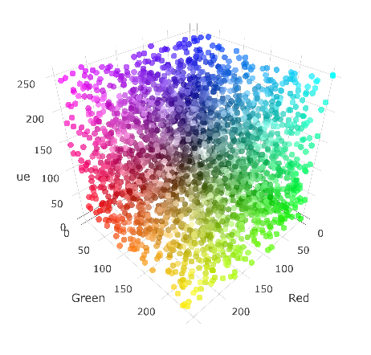

I'm an undergraduate from Shanghai Jiao Tong University,majoring in Electronic Engineering.I'm trying to learn more interesting things and make life colorful and convinent by program.
I have been learning about website for years and enjoy design the front-end and whole structure of websites by PHP , HTML , CSS and JavaScript.
I also finish some projects by Java & Python, you can see these projects if you scroll down.
It is a special scholar search engine which can show you the academic map, as well as the topics information.This search engine & recommendation system can help you to find the best paper you want.
Douban Reading Crawler can help you to get books from a certain topic so that yocan find books which have high rates.
It's also a basic of book recommendation system, the excellent books can be discovered from a great many of books.
View on GithubThis graph can help you transform the RGB value to the color which you can see directly.The x,y,z axes represent the red, green and blue value of a certain color.
When you hover on a point , you can see the value of this point, x represents Red, y represents Green and z represents Blue.The background color is the color what this RGB value equals.You can also drag the graph to orbit it and observe it from different angles.
